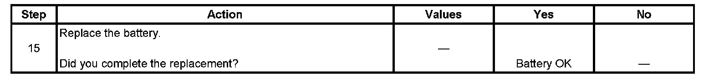

Battery Inspection/Test
BATTERY INSPECTION/TEST
TOOLS REQUIRED
J 42000 Battery Tester
DIAGNOSTIC AIDS
CAUTION: Refer to Battery Disconnect Caution.
IMPORTANT:
- The battery test using the J 42000 Battery Tester requires correct connections to the battery terminals. A failure to obtain the correct connections during the test may result in a failed test on a good battery.
- Use the Out of Vehicle test for each battery when testing a vehicle with dual batteries.
Follow these instructions in order to avoid an incorrect diagnosis because of connections:
- If testing the vehicle with the battery cables still connected, wiggle the J 42000 clips on the terminal bolt. This may cut through any coating or through any oxidation that may be present on the bolt.Even new bolts contain a protective coating that may insulate or cause a resistance in the test circuit.
- If correct connections to the battery terminal bolts in the vehicle are in doubt, perform the following steps:
1. Disconnect the negative battery cable.
2. Disconnect the positive battery cable.
3. Install the test adapters on the terminals.
4. Follow the instructions for testing a removed battery.
- If the tester displays a REPLACE BATTERY or BAD CELL-REPLACE result for a battery tested in the vehicle with the battery cables connected, perform the following steps:
1. Disconnect the negative battery cable.
2. Disconnect the positive battery cable.
3. Install the tester adapters.
4. IMPORTANT: Always write the test code displayed by the tester on the repair order for any warranty purposes. The number is a unique code that describes the test data for a particular battery at a particular time. The test code may occasionally repeat when you retest the same battery. More often, each test will result in a different code. Use the test code from the second, or Out of Vehicle test.
Follow the instructions for testing a removed battery.
5. Replace the battery only if the second test shows a REPLACE BATTERY or BAD CELL-REPLACE result.Use the test code from the second test for any warranty purposes.
- Use the correct terminal adapters.Do not use any common bolts or a combination of bolts, of nuts, and of washers as adapters when testing the battery.Use the test adapters that are provided with the J 42000 or GM P/N 12303040 terminal adapters. If the adapters that are provided with the J 42000 require replacement, use GM P/N 12303040. Any other adapter may not contact the correct areas of the battery terminal, causing a resistance that may result in an invalid battery test result.
TEST
Step 1 - Step 8:
Step 9 - Step 14:
Step 15:
